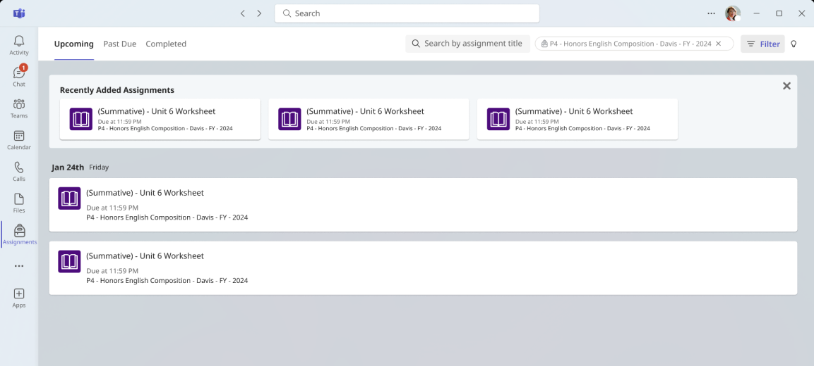
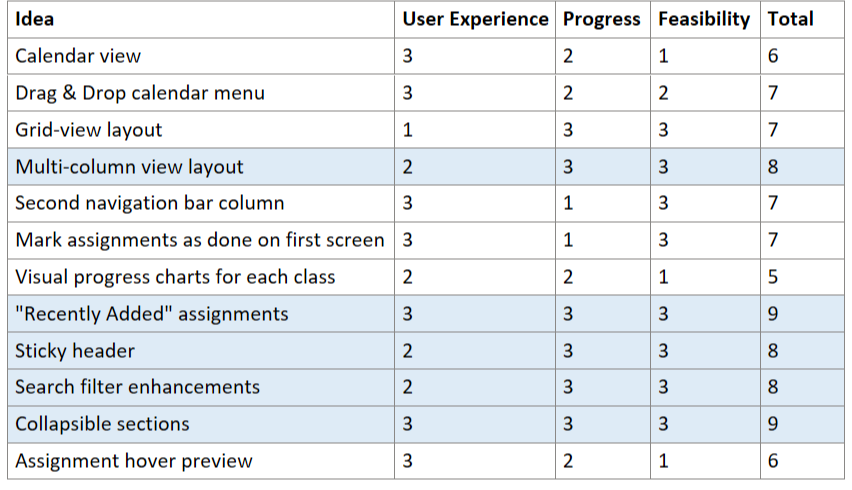
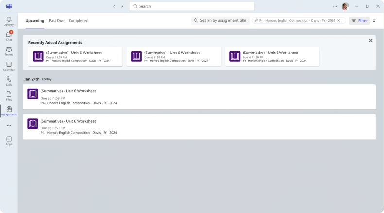
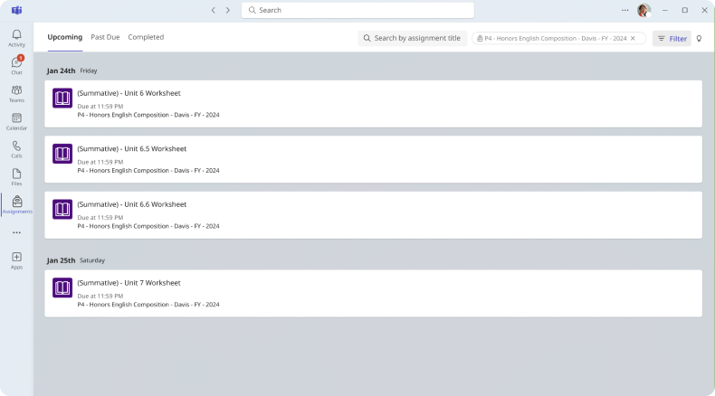
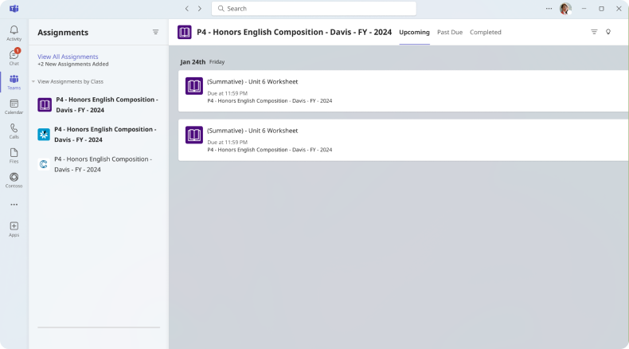

Microsoft - Fall of 2024
Worked on a project improving Assignments feature in the MSFT Teams application
Project Overview
Microsoft Teams is an application available for corporate organizations, small businesses, and even schools to coordinate within their company. My project’s focus is directed towards improving navigation in the Assignments feature in Teams for Education, primarily used by students to track homework and exams in class.
Feasibility Analysis of Potential Solutions

Recently Added Assignments
Issue: Unseen assignments are hard to distinguish
• Usually, unseen assignments are newer; not viewed by students when it is released
• New design pushes newer assignments to the top to alert students
• Will not appear if no new assignments are added or unseen assignments are present


Search & Filter UI Optimization
Issue: Filter & search bar were invisible elements and unknown for many users
• Adds search menu on first screen
• Filter button emphasized with label
• If tags are applied to assignments, they appear adjacent to search
Second Navigation Bar
Issue: inconsistent UI design with other Teams tabs
• In “Teams” tab, a common feature among all versions, a second NavBar is available for clearer organization
• Some students may prefer this change in Assignments as well for consistency and sorting by class
